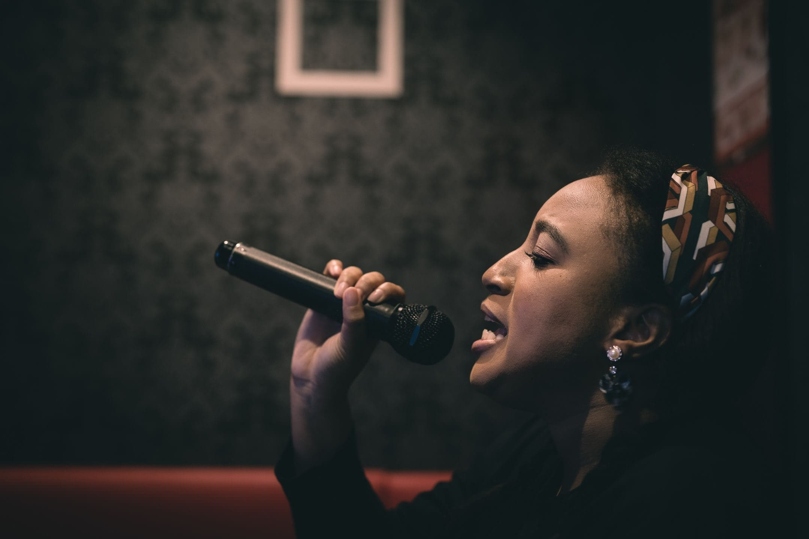

The Organizers:
伊藤樹里

シアター万華鏡のディレクター、企画者。東京出身、ニューヨーク在住経験あり。留学先のカルフォルニア大学サンディエゴ校で演劇が好きになり、ディレクターや脚本家として大学の数々の作品に携わった。2018年から横浜シアターグループ の芸術監督アシスタントとして様々なプロジェクトを進行。2019年にはディレクターとして、ギリシャ神話の『アンティゴネ』をデバイズド・シアター方針で作劇、公演。他プロジェクトとして、出雲阿国のミュージカルのドラマツルギーも担当している。シアター万華鏡では、演出や脚本のほか、翻訳、コンテンツ作成、PRも担当。
フェイス・エヴァンズ
シアター万華鏡のディレクター、企画者。小学生の頃から舞台に立ち始め、大学に入ってからも学校や教会、地域の劇場で役者として参加。高校時代の作品では、『イントゥ・ザ・ウッズ』の魔女役や『ペンザンスの海賊』のルース役を演じた。日本に移住した2012年から演劇活動をしばらく休止していたが、2018年に名古屋で演劇活動を再び開始。2018年には『Gerry in the Attic 』（KPB名古屋シアターカンパニー）、2019年には『饒舌な罪びと』（シアターイリデッセンス）の制作スタッフとして活動。2019年11月に『Unmarked』（Aichi Vision）のクーパー役で舞台に復帰。シアター万華鏡では、演出や脚本のほか、SNSのコンテンツ作成、ワークショップ公演では役者としても活躍。
ナターシャ・ミリガン

シアター万華鏡のステージマネージャー、企画者。アリゾナ州で生まれ育ち、家族の出身が日本であることから、若い頃から日本への深い好奇心を持っていた。また、社交ダンスの家系に生まれたことから、芸術に惹かれていた。12年以上にわたり、地域の劇場で役者、ディレクター、振付師、教師として活躍してきたが、大学ではステージマネジャーとして活動。主に『Revolt. She said. Revolt again.』や『Dead City』に携わった。日本と演劇への関心を結びつけるために、2019年には横浜シアターグループ『アンティゴネ』の創作版にステージマネージャーとして参加。最近では、ウィラメット大学で上演された『Blood Wedding』のサウンドデザインも担当（新型コロナウイルスにより上演中止）2021年には、JETプログラムの国際交流員として来日予定。英語圏と日本の架け橋として舞台芸術に関わり続けたいと思っている。シアター万華鏡では、ステージマネージャーのほか、マーケティングと技術編集を担当。
川上綾

シアター万華鏡のプロデューサー、企画者。9歳の時、シンガポールのビクトリア劇場で行われた『サウンド・オブ・ミュージック』の全国公募に応募し、役者としてのキャリアをスタート。その後、『ウエスト・サイド・ストーリー』のマリア役、『エビータ』のエバ・ペロン役、『スウィーニー・トッド』のBeggar Woman、『ワンス・アポン・ア・マットレス』（Brand X Theater）の音楽監督など、数多くの舞台に携わる。日本では、広島の歌劇団『マヤ・オペラ』でデビュー。ここ10年間は、名古屋で演劇活動をしている。『ドリームキャッチャー』（Nuk'pana／ボーカルコーチ／アシスタントディレクター、KPBシアター）、『Nagasaki Dust』（Kimiko、KAN劇団）、「夏の夜の夢」（Puck、Nameless Theater）、『スノーエンジェル』（Kana、プロデューサー、自主制作）などの作品に参加。2017年、英語と日本語の劇団シアターイリデッセンスを設立し、ミュージカル『トランジット』の脚本、音楽監督、主演、プロデュースを担当。2018-2019年には、江戸時代の日本を舞台にしたバイリンガル版『メデア』を制作・演出、『饒舌な罪びと』を制作・主演。シアター万華鏡では、プロデューサーのほかマーケティングや技術編集を担当。